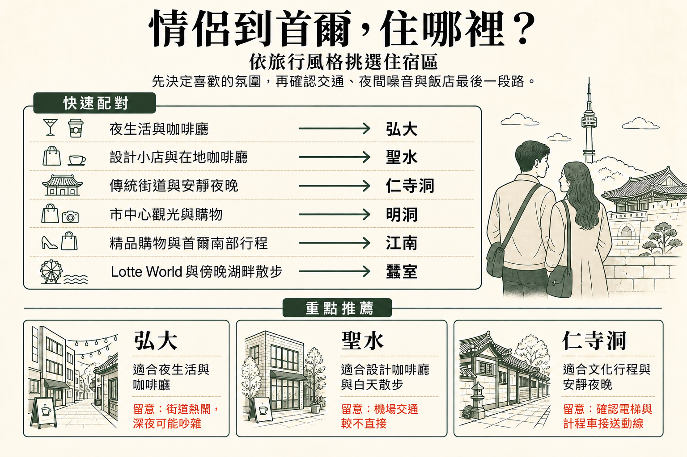

計畫之間的空檔，也很重要
情侶旅行最合適的街區，常是能配合兩人在大景點之間相處方式的地方：早晨咖啡、晚間散步、附近晚餐，以及輕鬆回飯店的路。
比起只找最低每晚房價，情侶通常更值得選一間每天回去都住得舒服的房間。在首爾連續玩了幾個整天後，床鋪尺寸、可用空間與方便的每日動線，可能更重要。
機場交通在第一天與最後一天最重要。直達鐵路很有用，但兩人長途飛行後帶行李移動，轉乘、車站大小與最後走到飯店的路，可能造成更大差異。
飯店離最繁忙的晚間街道有些距離，即使熱鬧街區也能住得舒服。確切街段與房間朝向，常比區名本身更影響睡眠。
晚餐後怎麼過，會讓情侶旅行很不一樣。弘大與梨泰院夜晚仍活躍，聖水較適合慢步調咖啡廳白天，仁寺洞則通常更早安靜下來。
能走出門喝咖啡、簡單吃飯或晚間散步，會大幅增加街區對情侶旅行的價值。兩人都不想再搭地鐵時，也讓沒安排的時間更容易度過。
最大差異常在觀光結束後：你可能會在意附近有沒有夜生活、能不能安靜散步、交通是否方便，或這個街區在沒有固定行程時，是否仍值得慢慢待著。
| 區域 | 適合需求 | 晚間氣氛 | 交通 | 主要取捨 |
|---|---|---|---|---|
| 弘大 | 咖啡廳、夜生活與活躍夜晚 | 熱鬧到深夜 | 直達 AREX，地鐵交通佳 | 夜生活街附近較吵 |
| 聖水 | 設計、咖啡廳與輕鬆白天探索 | 有流行感，但較安靜 | 市內交通佳，機場往返較不直接 | 經典觀光行程較沒效率 |
| 仁寺洞 | 文化與安靜夜晚 | 安靜 | 前往歷史市中心方便 | 深夜活動較少 |
| 明洞 | 初訪與輕鬆觀光 | 繁忙、便利 | 市中心交通很方便 | 以觀光客為主 |
| 江南 | 首爾南部與高級旅行 | 繁忙都市感 | 漢江以南移動方便 | 離歷史市中心景點較遠 |
| 蠶室 | Lotte World 與湖邊夜晚 | 現代、較安靜 | 首爾東南部交通佳 | 離歷史市中心景點較遠 |
| 梨泰院 | 餐飲與夜生活 | 熱鬧 | 市中心連接佳 | 坡道與不平順的步行路線 |
| 麻浦／孔德 | 機場便利與安靜住宿 | 日常生活感，熱鬧程度適中 | 從孔德直達 AREX | 緊鄰的主要景點較少 |


觀光結束後，還想讓街區繼續成為旅行一部分的情侶，很適合弘大。咖啡廳、餐廳、音樂與夜生活，讓臨時決定的晚上也好安排，弘大入口站還有直達 AREX 普通列車。
最繁忙夜生活街可能吵到很晚。飯店離主要晚間街區幾分鐘，咖啡廳與交通仍在附近，夜裡回去卻明顯更安靜。
閱讀弘大指南 →
喜歡在街區慢慢待著，而不是從大景點快速趕往下一站的情侶，適合聖水。咖啡廳、設計店、服飾、快閃店與新興韓國品牌，讓沒有嚴格行程的下午也能輕鬆度過。
相較於部分市中心或西部區域，宮殿觀光與機場交通較沒效率。因此，街區本身是想要的旅行體驗之一時，聖水最合適。
閱讀聖水指南 →
仁寺洞讓情侶方便前往宮殿、傳統街道與市中心幾個適合散步的歷史區。比起深夜夜生活，更在意咖啡廳、文化觀光與安靜晚間散步的行程，很合適。
街區比弘大或梨泰院更早安靜，部分飯店在小街道。想要活躍夜晚的情侶可能嫌太靜，其他人則會把這份平靜當成住宿的主要理由。
閱讀仁寺洞指南 →
第一次去首爾的情侶，明洞是最容易安排的實用住宿區。市中心觀光、購物與吃飯容易串起，改變計畫也不必把大半天花在跨城移動。
街區繁忙、以旅客為主，比較少小街區的親密感或住宅區氛圍。比起日常氣氛，更重視便利的情侶，通常會覺得這項取捨值得，尤其是短期初訪。
閱讀明洞指南 →
情侶行程已有漢江以南的購物、餐廳、診所、商務或預約，江南就合理。區域晚間仍活躍，晚餐後不必回市中心，也有很多活動選擇。
行程以宮殿、仁寺洞與歷史市中心為主，反覆跨城可能很累。因此，行程有明確理由時，江南才是很好的住宿區。
閱讀江南指南 →
Lotte World、Seoul Sky、石村湖或首爾東南部是旅行重點時，蠶室尤其合適。湖邊與大型現代建築群，也讓景點行程容易搭配附近晚餐與晚間散步。
主要取捨是離許多歷史市中心景點較遠。只計畫一天在蠶室的情侶，通常住市中心、需要時再過來，彈性更大。
閱讀蠶室指南 →
想吃國際料理、去酒吧，感受有別於主要購物區的晚上，梨泰院對情侶很實用。也容易串起附近漢南與龍山其他地區的餐廳、藝廊和咖啡廳。
地形是主要實際問題。坡道與小支巷，會讓地圖上看似很近的飯店，實際卻不方便，尤其帶行李或玩了一整天後。
閱讀梨泰院指南 →
想住得安靜、機場交通又簡單，麻浦與孔德很適合情侶。孔德有直達 AREX 普通列車，周邊街區有日常餐廳與較具住宅感的晚間氣氛。
主要觀光區不在飯店門外，多數日子需先搭地鐵；換來的是抵達與離開更容易，一天結束時街區也較放鬆。
閱讀麻浦／孔德指南 →床鋪尺寸的影響，可能比房型名稱顯示的更大。住好幾晚的情侶，通常會希望先弄清楚標示的雙人床或加大雙人床，兩人實際睡起來是否舒服。
首爾市中心房間可能偏小，兩個行李箱一打開，很快就占掉剩餘地板空間。較長的情侶旅行，房間稍大就可能舒服許多。
各飯店浴室配置與隱私程度不同。淋浴、洗手台與房間分隔的照片，常能看出文字說明沒有提到的實際細節。
即使同間飯店，房間朝向與確切街道不同，噪音也可能不同。近期對交通、夜生活與走廊噪音的評論，比預設整區安靜或吵雜更有用。
現代飯店通常有電梯，但從車站過來仍可能有樓梯或不好走的路口。帶行李抵達離開時，最容易感受到。
事先弄清楚櫃台時間與非營業時段流程，晚到會更簡單。也值得知道抵達後，飯店附近還有沒有餐飲或便利商店營業。
飯店早餐能簡化早晨，但周邊有好咖啡廳、麵包店與休閒餐飲時，就沒那麼重要。附近街區可能和早餐方案本身同樣值得考慮。
從地鐵出來，可能有坡道、樓梯、大路口或地下通道，單看距離看不出來。帶行李抵達時，特別值得留意這段路。
有些街區搭機場鐵路方便，其他區域搭機場巴士或計程車可能更容易。最簡單的方式取決於實際飯店，不只看區名。
入住前或退房後能寄放行李，會讓第一天與最後一天輕鬆許多，尤其班機時間和飯店入住／退房時間之間有好幾個小時空檔時。
旅行天數較長時，有洗衣設施很實用，也能減少兩人需要打包的衣物。附近的自助洗衣店，可能和館內洗衣機同樣方便。
如果頂樓、休息室或共用觀景空間是預訂理由之一，就要留意開放時間與季節性關閉。入住期間真的用得到，這些設施才最有價值。
班機、天氣或行程仍不確定時，多付一點換彈性取消可能值得。最低的不可退款房價，不一定最實用。
漂亮街區如果去每個大景點都要長途移動，也可能不方便。適合情侶的住宿區，通常要兼顧氣氛與兩人真正會去的地方。
各區晚間節奏不同。以白天咖啡廳聞名的區域，可能比以夜生活和餐廳為主的地方更早安靜下來。
機場便利很重要，但大部分住宿時間都在抵達之後。如果街區更符合其餘四五天的行程，機場路線稍不直接，也可能值得。
街區選得合適，找飯店就簡單許多。房間大小、床鋪配置、噪音、實際車站步行與上述細節，通常比只看每晚房價更值得比較。
想逛咖啡廳、夜生活與活躍晚間活動，弘大最容易安排。白天以設計探索為主，聖水更適合；偏好文化與安靜夜晚，則仁寺洞不錯。
明洞是很實用的情侶住宿區，尤其第一次旅行。觀光、購物與用餐容易串起，但比起聖水或仁寺洞，氣氛更繁忙，也更以旅客為主。
想讓咖啡廳、音樂與夜生活就在飯店附近，弘大特別適合。住得稍遠離最繁忙的晚間街道，能讓夜裡更舒服，又保留街區活力。
喜歡咖啡廳、設計店、快閃店與輕鬆白天散步，聖水是不錯的選擇。經典宮殿觀光較不方便，因此最好是街區本身就占行程一部分。
各區氣氛不同。仁寺洞較安靜、傳統；聖水現代、以咖啡廳為主；蠶室則有石村湖與 Lotte 建築群周邊的現代環境。
注意預算的情侶，弘大與麻浦／孔德常有實用選擇。若住市中心能替其餘行程省時間，明洞也可能值得多花錢。
高級飯店、餐廳與漢江以南安排，本來就是行程一部分時，江南自然值得考慮。首爾其他地方也有豪華住宿，所以街區仍應符合每日路線。
靠近地鐵有用，但確切出口與最後一段步行也重要。稍遠但有電梯、街道簡單的路，可能比短卻有樓梯或陡坡的路更輕鬆。
咖啡廳、夜生活與活躍夜晚最重要時，弘大是各方面均衡、最容易安排的選擇。以設計、咖啡廳與白天探索為主的慢步調旅行，聖水更合適；想看歷史街道與安靜夜晚的情侶，則適合仁寺洞。簡單觀光與日常便利比街區氣氛更重要時，明洞仍是實用替代選擇。